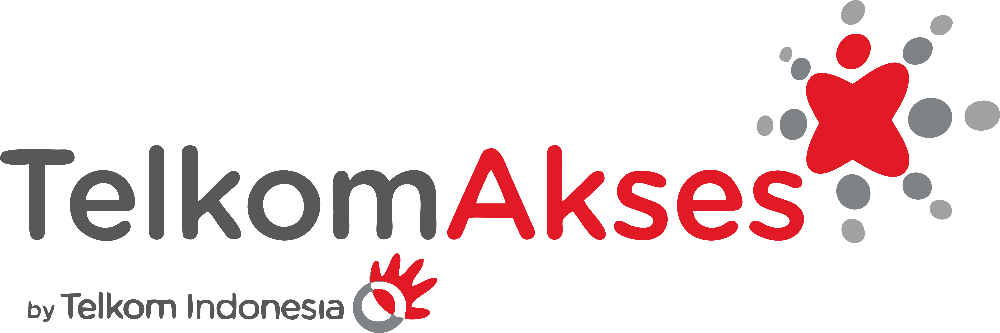
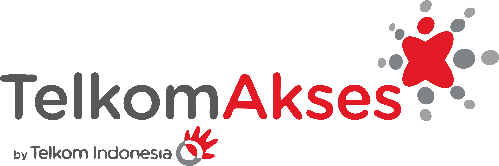

SMK Telkom Malang adalah pelopor Sekolah menengah kejuruan pertama di Indonesia di bidang Teknologi dan Informatika. Berpengalaman dari tahun 1992 yang telah terakreditasi "A" dan mempunyai standart mutu ISO 9001:2008.

Kami mempunyai dua program studi unggulan yang banyak dicari oleh industri-industri di dunia IT.

Mempelajari seluruh aspek produksi software seperti aplikasi website, aplikasi android, maupun aplikasi dekstop.
Mempelajari cara merakit dan instalasi komputer, instalasi jaringan Local Area Network (LAN) dan Wide Area Network (WAN).
Banyak kompetisi di bidang IT maupun non-IT yang banyak diraih oleh siswa-siswi SMK Telkom Malang. Segala prestasi tersebut sangat membanggakan sekolah dan dapat menjadi bekal untuk meraih masa depan yang gemilang.

Ikuti terus informasi dan kegiatan terbaru tentang SMK Telkom Malang
Anda juga bisa mengikuti informasi terbaru SMK Telkom Malang di akun media sosial.
Beberapa agenda kegiatan SMK Telkom Malang.
Dukungan dari berbagai pihak.


 



Pelopor SMK bidang Teknologi dan Informatika di Indonesia. Berpengalaman dari tahun 1992 yang telah terakreditasi "A" dan mempunyai standart mutu ISO 9001:2008.